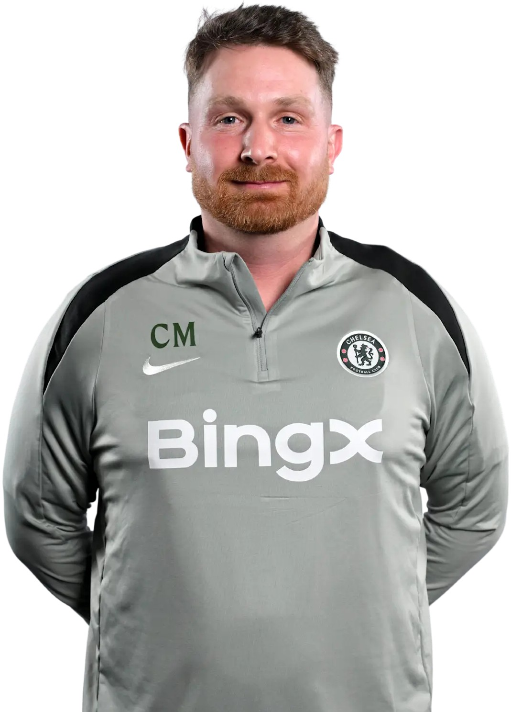

Treinador: Calum McFarlane
Calum McFarlane assumiu o cargo de treinador interino do Chelsea a 22 de abril de 2026, sucedendo a Liam Rosenior. Promovido das funções de adjunto e treinador de Sub-21, McFarlane foi o escolhido para liderar a equipa principal e garantir a estabilidade dos Blues até ao final da época.

Estádio: Stamford Bridged
O Stamford Bridge é um estádio localizado no centro da cidade de Londres, sede do Chelsea. Inaugurado em 1877, foi adquirido em 1896 pelos irmãos Gus e Joseph Mears.

Estilo de Jogo:
O estilo de jogo de Calum McFarlane no Chelsea é marcado pela flexibilidade tática e por uma forte influência da "escola City", adaptada às necessidades imediatas de um período de transição.
"Nisi Dominus Frustra!"